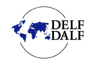
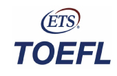

Prepare un segundo idioma
Dominar un segundo idioma es una exigencia académica y laboral para todos los profesionales. En el ámbito académico, incluso las universidades de países de habla inglesa, exigen que sus estudiantes puedan leer y producir artículos e investigaciones en varios idiomas. Por su parte, las empresas y organizaciones nacionales e internacionales exigen en sus procesos de selección al menos el dominio de un idioma adicional al nativo. En ese sentido, y antes de tomar la decisión de hacer un posgrado en el exterior, es importante conocer su nivel de idioma en el que desea estudiar.
Exámenes de idioma
Las universidades son autónomas en decidir qué exámenes y puntajes requieren de sus candidatos. Sin embargo, la mayoría de universidades exigen mínimo candidatos que tengan el nivel B2 o C1 según el Marco común Europeo de Referencia para las lenguas (MCERL). A continuación relacionamos los exámenes más comunes y sus puntajes mínimos.
Exámenes más comunes y sus puntajes mínimos
| IDIOMA | EXAMEN | PUNTAJE MÍNIMO |
| Inglés | IELTS | |
| TOEFL | ||
| TOEIC | ||
| Francés | Delf- Dalf | |
| Alemán | Goethe-Zertifikat C1 |
|
| TestDaF | ||
| Prüfung Wirtschaftsdeutsch International (PWD) | ||
| Italiano | Diploma Commerciale di Lingua Italiana; CELI 4- Livello 4 | |
| Certificato di Conoscenza della Lingua Italiana (CILS). | ||
| Portugués | CELPE-Bras | |
| Mandarín | HSK V | |
| Ruso | TORFL/ÒÐÊÈ III Test of Russian as a Foreign Language Tercero/Tretii |
DELF y DALF
 El DELF (Diploma de Estudios en Lenguas Francesas) y el DALF (Diploma Avanzado en Lenguas Francesas) son los diplomas oficiales del Ministerio de Educación francés para certificar las competencias en lengua francesa de personas extranjeras. Están compuestos por seis diplomas independientes: El DELF cubre los niveles A1, A2, B1 y B2, elemental e intermedio; y el DALF los C1 y C2, experimentado. En cada uno se evalúan la comprensión y expresión oral y escrita, requiriendo competencias específicas desde manejar la argumentación hasta ser capaz de desarrollar un tema de ciencias o ciencias humanas y realizar un debate con los examinadores en los niveles más avanzados.
¿Dónde y qué debo hacer para presentar estos exámenes?
Los candidatos pueden inscribirse directamente en el que prefieran, de acuerdo al nivel de dominio y la universidad a la que decidan presentarse. Pueden hacerlo en cualquier sede de la
Alianza Francesa. Tenga en cuenta que no basta con dominar el idioma, debe conocer la estructura de estas pruebas y manejar las destrezas tanto orales como escritas que exige cada nivel,
sobre todo en lo que se relaciona con la argumentación y organización del discurso. Se pueden realizar solo una vez pues no tienen fecha de caducidad, siempre y cuando haya obtenido la
calificación requerida por la institución a la que se va a presentar. En la página Web www.ciep.fr encuentra información sobre los exámenes.
La Alianza Francesa ofrece talleres para prepararse para estos diplomas. Puede consultar la información sobre los talleres y la estructura de las pruebas disponible en la Alianza Francesa en su página web
www.alianzafrancesa.org.co o en las bibliotecas de sus sedes de manera gratuita.
¿Cuál es el puntaje mínimo?
No hay un puntaje estándar en las universidades pero debe obtener mínimo 50 sobre 100 para aprobarlo.
¿Cuándo debo presentarme?
Para los DELF y los DALF hay tres sesiones al año: en marzo, junio y noviembre. Debe inscribirse con un mes de antelación. Estas son las fechas para los próximos exámenes de acuerdo al nivel en el 2012:
A1: 6 de noviembre
A2: 7 de noviembre
B1: 8 de noviembre
B2: 9 de noviembre
C1: 13 de noviembre
C2: 14 de noviembre
¿Cuánto tiempo debo estudiar para tener un buen resultado?
Para los niveles básicos, del A1 al B2, aproximadamente 600 horas, y para los avanzados, C1 y C2, de 750 a 800 horas.
¿Qué costo tienen los exámenes?
El precio varía de acuerdo al nivel:
A1: $ 71.000
A2: $ 76.000
B1: $ 118.000
B2: $ 162.000
C1: $ 182.000
C2: $ 198.000
¿En cuánto tiempo tendré los resultados?
Los resultados se demoran un mes o mes y medio. Primero se recibe una certificación, antes del diploma oficial que viene de Francia.
TOEFL y IELTS

El TOEFL (Test Of English as a Foreign Language)
Es un examen que mide fluidez y conocimientos en el idioma inglés, basado en el inglés estadounidense. Es desarrollado por la empresa ETS y es el examen de idioma inglés más reconocido
en todo el mundo, entre los que se incluyen Australia, Canadá, el Reino Unido y los Estados Unidos. Se imparte por Internet y es de selección múltiple. Mide la capacidad de utilizar y
entender inglés, evaluando las habilidades auditivas, orales, de lectura y escritura para desarrollar tareas académicas. La prueba tiene una duración de tres horas aproximadamente.
Para más información visite la página www.ets.org
EL IELTS (International English Language Testing System)
Es otro de los exámenes de inglés más populares en el mundo. Está gestionado conjuntamente por los Exámenes ESOL de la Universidad de Cambridge, el British Council y IDP Education Australia.
Los candidatos pueden elegir tanto el Módulo Académico como el Módulo General. Es una prueba escrita sin opción múltiple y se realiza en papel. Tiene cuatro partes: Listening , Reading,
Escritura y Expresión oral. El tiempo total de la prueba es de 2 horas y 45 minutos. Para más información visite la página www.ielts.org
¿Dónde y qué debo hacer para presentar estos exámenes?
Debe entrar a las páginas web mencionadas arriba para conocer las fechas y las sedes donde se presentan los exámenes.
Colfuturo tiene un centro de consejería académico,
certificado por Education USA, con materiales certificados para los dos exámenes y que además ofrece la opción de hacer un simulacro de las pruebas en computador, a través de la cual
puede se puede identificar las fallas y generar un plan de acción para preparar el examen. Las personas que quieran consultar material o hacer un simulacro pueden asistir a Colfuturo
los viernes a las 8 am a una charla informativa, ya sea presencial o por Internet, y agendar una cita para consultar materiales y/o hacer un simulacro de TOEFL, IELTS, GRE y GMAT.
En las ciudades fuera de Bogotá las personas pueden entrar a la página de Education USA www.educationusa.state.gov
en donde pueden ver la lista de centros de asesoría y escoger la más cercana o en las sedes de el Colombo Americano.
¿Cuál es el puntaje mínimo?
Cada universidad tiene requerimientos diferentes. Lo normal es que una universidad pida 6,5 en el IELTS como mínimo. En el caso del TOEFL, lo mínimo es 80, pero cada universidad puede pedir lo que quiera.
¿Cuándo debo presentarme?
El TOEFL se puede tomar cada dos meses si se quiere, y el IELTS cada seis.
¿Cuánto tiempo debo estudiar para tener un buen resultado?
Debe tenerse en cuenta el nivel que tenga persona. Si es básico, lo aconsejable es de dos a tres años. Si tiene un buen nivel de todas maneras debe prepararse para el examen, no es solo conocer la lengua, sino las estructuras de las pruebas. Es importante consultar los libros de preparación y las páginas Web. Prepárese con un mínimo tres meses de anticipación.
¿Qué costo tienen los exámenes?
El IELTS $ 435.000 y el TOEFL $ 215.000
¿En cuánto tiempo tendré los resultados?
Los del TOEFL en dos semanas y los del IELTS entre 15 y 16 días. Los resultados pueden llegarle a la persona o a la universidad a la que esté aplicando.
En el caso del IELTS se pueden enviar cinco resultados a cinco universidades y en el del TOEFL a seis o siete. La persona tiene la opción de recibir el certificado y
también enviarlo a las universidades. Ambos exámenes tienen vigencia de dos años y medio.
Recuerde que en cualquier caso no solo basta con conocer el idioma para pasar un examen, es necesario conocer los materiales específicos y preparar cada prueba de manera particular.
Prepárese con tiempo, teniendo en cuenta los tiempos de las admisiones de las universidades y de la convocatoria de COLFUTURO.
Exámenes de aptitud y conocimiento
Durante la búsqueda de un programa de posgrado de alta calidad, es posible que muchas universidades requieran los exámenes como el GMAT o el GRE para los procesos de admisión.
No se deben excluir programas de posgrado porque exijan estos exámenes. El GRE y el GMAT son exámenes estandarizados en inglés realizados en computador, que evalúan por escrito habilidades verbales y
matemáticas. Los dos miden competencias básicas y son un requisito para ingresar a un programa de posgrado.
Entre más riguruso sea el proceso de admisión, las personas aceptadas,
los compañeros y el programa será más riguroso.
No olvide que estas pruebas no solo evalúan las capacidades analíticas sino también el manejo del estrés, así que lo mejor es mantener
la calma. Los exámenes no son difíciles, es cuestión de entender su estructura y aprender a manejar las preguntas.
GRE (Graduate Record Examination)
Constituye uno de los requisitos de admisión en las escuelas de posgrado en los Estados Unidos y otros países anglosajones. Tiene como obje tivo medir las capacidades de razonamiento verbal y cuantitativo, escritura analítica y pensamiento crítico. Se compone de tres secciones:
- Dos ensayos (Analytical Writing): uno consistente en el análisis de un asunto (Analysis of an Issue), exponiendo y sustentando una opinión personal; y otro en la crítica de un argumento (Analysis of an Argument).
- Razonamiento Verbal (Verbal Reasoning): mide la capacidad de analizar y evaluar material escrito y de sintetizar información, analizar las relaciones entre los componentes de las oraciones y reconocer las relaciones entre las palabras y los conceptos.
- Razonamiento Cuantitativo (Quantitative Reasoning): evalúa la habilidad de resolver problemas de aritmética, álgebra, geometría y datos.
EL GRE es adaptativo entre secciones, es decir que se ajusta al nivel de habilidad individual. Al contestar cada pregunta, los resultados determinan cuál será la siguiente pregunta. Las respuestas correctas aumentan el nivel de dificultad general del examen, lo cual favorece el puntaje final. Las respuestas incorrectas bajan el nivel de dificultad del examen, lo cual afecta el puntaje final.
Duración, puntaje e inscripciones
- Tiene una duración de tres horas y media.
- Los puntajes van de 0 a 6 en los ensayos. En Verbal y Cuantitativo los resultados oscilan entre 130 y 170. La media suma estas dos secciones sin contar los ensayos. De acuerdo al programa que se vaya a elegir, se tiene más en cuenta uno u otro a la hora de evaluar los resultados.
- Puede realizarse la inscripción a través de la página del ETS www.ets.org y se puede presentar una vez al mes hasta cinco veces al año.
Tips para tener en cuenta
- Recuerde los servicios de COLFUTURO
- Lo primero es conocer el examen. La preparación no es de una semana. Es conveniente estudiar todos los días, durante varios meses, con el fin de conocer las secciones y cómo trabajar cada una de ellas, e identificar las fallas individuales para no cometer errores el día del examen.
- Es importante realizar un proceso de preparación paralelo de matemáticas y verbal al mismo tiempo.
- La mayoría de personas temen a la sección de matemáticas, pero no es complicada, es casi de nivel de colegio.
- Es importante fortalecer el vocabulario y la comprensión de lectura para sobresalir en la parte verbal.
- Tenga en cuenta que el examen mide por igual a estudiantes extranjeros y locales con el mismo nivel, por lo que se supone que el candidato debe tener un nivel avanzado de inglés: se recomienda un IELTS de 6 o un TOEFL de 100.
- Aunque existe la opción de saltarse preguntas y al finalizar regresar, no es aconsejable hacerlo. Si no se contesta una pregunta es como si estuviera mal. Es mejor contestar todo y si sobra tiempo regresar a las preguntas que se quieren revisar.
GMAT (Graduate Management Admission Test)
Es de selección múltiple y mide la aptitud necesaria para cursar maestrías de negocios o programas de MBA. Se compone de cuatro secciones principales:
- Evaluación de escritura analítica (Analytical Writing Assessment): consistente en un ensayo que analiza la lógica de un argumento.
- Razonamiento integrado (Integrated Reasoning): combina matemáticas e inglés en ambiente simulado de negocios.
- Un componente de matemáticas o cuantitativo (Quantitative): en áreas tales como aritmética, álgebra, geometría y análisis de suficiencia de datos, entre otros.
- Un componente de inglés (Verbal): pone a prueba el conocimiento del idioma, la capacidad para entender y criticar argumentos y sacar conclusiones y la comprensión de lectura.
Duración, puntaje e inscripciones
- El GMAT, al igual que el GRE, es una prueba adaptativa.
- Tiene una duración de tres horas y media.
- Los ensayos tienen una calificación de 0 a 6. El puntaje oscila entre 200 y 800. Las universidades consideran un candidato a partir de 650.
- Para inscribirse al GMAT debe ingresar a la página www.mba.com
- El examen puede presentarse hasta cinco veces en el año, una vez por mes calendario.
Tips para tener en cuenta
- Recuerde los servicios de COLFUTURO
- La complejidad de las preguntas no es el problema principal: la dificultad real estriba en la cantidad de conceptos con los cuales el candidato debe estar familiarizado y la limitación del tiempo.
- Aunque es una prueba adaptativa, entre el 20 y el 30 por ciento de las preguntas son de prueba que no califican. No tiene relación de cómo le está yendo a uno en el examen. No hay que sacar conclusiones.
- En el GMAT para estudiantes latinoamericanos se aceptan resultados por debajo de la media, por lo que aporta en su experiencia y en su forma de relacionarse. Es un componente de la aplicación pero no lo es todo, al igual que el GRE.
PASOS PARA PLANEAR UN POSGRADO
Su nivel de idioma
- Si su nivel es básico:Prepararse para tomar un posgrado en otro idioma puede tomarle de uno a tres años.
- Si su nivel es intermedio:Pasar a nivel avanzado puede tomarle de un año a seis meses.
- Si su nivel es avanzado:Puede presentar el examen de idioma para postularse a un posgrado.
El registro para los examenes puede tomarse de uno a seis meses.
En los exámenes
tenga en cuenta
GLOSARIO DE TÉRMINOS
Tenga en cuenta estos términos que encontrará al momento de buscar o elegir un posgrado en el exterior.
Accreditation (acreditación):
Documento oficial que reconoce que una universidad o escuela cumple con los estándares de una asociación regional o nacional.
Arts and Sciences (Artes y Ciencias):
Una categoría de estudio universitario que incluye humanidades, ciencias sociales, ciencias naturales, matemáticas, idiomas y bellas artes.
Associate Degree::
Título obtenido en una universidad después de terminar un programa de dos años de estudio. El título puede ser De Artes (AA) o De Ciencia (AS), De Ciencia Aplicada (AAS) y De Tecnología Aplicada (AAT).
Award Letter (Carta de ayuda financiera):
Documento emitido a nombre de un estudiante receptor de ayuda financiera que indica el tipo, monto y fechas de desembolso de los fondos otorgados por parte de programas de ayuda financiera.
COLFUTURO le ayuda
COLFUTURO cuenta con diferentes programas y servicios que le pueden ser de gran ayuda al momento de planear sus estudios de posgrado en el exterior.
REBECA CONSEJERA VIRTUAL
 Ofrecemos información sobre educación internacional, planeación de estudios y formas de financiación a través de citas personalizadas o en línea.
Ofrecemos información sobre educación internacional, planeación de estudios y formas de financiación a través de citas personalizadas o en línea.
Hagale una pregunta a ReBeca...
ASESORÍA EN EDUCACIÓN INTERNACIONAL
 Ofrecemos información sobre educación internacional, planeación de estudios y formas de financiación a través de citas personalizadas o en línea.
Ofrecemos información sobre educación internacional, planeación de estudios y formas de financiación a través de citas personalizadas o en línea.
Solicite una cita personalizada...
APOYO A PERSONAS FUERA DE BOGOTÁ
 Su objetivo es acercarse a las regiones e identificar los mejores estudiantes, egresados y profesores con excelencia académica para brindarles un acompañamiento
durante el proceso de aplicación a un posgrado en el exterior.
Su objetivo es acercarse a las regiones e identificar los mejores estudiantes, egresados y profesores con excelencia académica para brindarles un acompañamiento
durante el proceso de aplicación a un posgrado en el exterior.
Postúlese al programa si usted vive fuera de Bogotá...
¿Cómo prepararse para el GMAT y el GRE?
Hay opciones en Internet con diferentes metodologías, como The Grad School con grupos pequeños, Kaplan con cursos más grandes, Get Ready, Fulbright Colombia y personas particulares.
Cada uno tiene costos diferentes. También puede hacerlo por su cuenta, pero recuerde utilizar los materiales oficiales del ETS para el GRE y del MBA para el GMAT.
Lo principal es conocer las preguntas y estructura del examen.
Se requieren en promedio dos meses de preparación personalizada, no vale la pena tomar una clase magistral,
pues es importante entender la estructura de los exámenes y los puntos a mejorar de cada candidato de manera individual.
Recuerde no obsesionarse con el puntaje. Lo importante es llegar preparados; en todo caso las pruebas se pueden repetir, por lo que al final de los exámenes conviene revisar el
resultado y no desecharlo.
Tanto el GRE como el GMAT tienen cinco años de vigencia. Por lo tanto, es mejor tomarlo al salir de la universidad, porque la persona está entrenada para estudiar y tiene frescos los conocimientos.
Tenga en cuenta las fechas límite de los programas y que los centros para realizar los exámenes en Colombia cierran en diciembre.
Por último, recuerde que el GRE y el GMAT son el complemento de un buen ensayo, de las cartas de recomendación y de las notas de su pregrado.
La idea es que sean el complemento de una aplicación completa y fuerte.